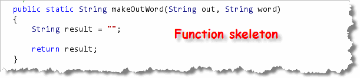
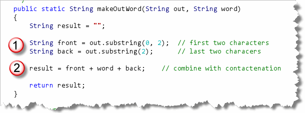
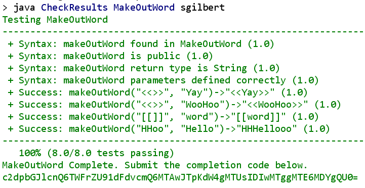

The makeOutWord method
Let's try another example: MakeOutWord.java, which you'll
find in your code folder this week.
You should stop reading right now and try to solve
the makeOutWord() problem. If you have difficulty, come
back here for some clues.
The Spec
Here's the specification for the problem with the method name (1),
the Javadoc parameter and return value specification (2), a
narrative description (3), and several examples (4):

The Skeleton
Using the narrative, you should be able to complete the basic
method skeleton, which looks like this:

The Completed method
To complete the method, you need to split the first parameter (out)
in two pieces. The specification guarantees that the first parameter
will always be four characters long. That means you can use the
two-parameter version of the substring() method to
grab the first two characters (which I've stored in a variable named
first), and the one-parameter version of substring()
to grab the last two characters:

Once you have the first parameter split in two, you just paste the two pieces around the second parameter (word) using
concatenation, and store the result back in result.
If you run CheckResults, you'll see that everything is now just fine:
